公告
asdasdas1
2021.10.21n-buna
NHK『東北ココから「埋もれたい“俺” ２３歳の景色」』 ナレーションを担当。
2021.10.21n-buna
NHK『東北ココから「埋もれたい“俺” ２３歳の景色」』 ナレーションを担当。
2021.10.21n-buna
NHK『東北ココから「埋もれたい“俺” ２３歳の景色」』 ナレーションを担当。
2021.10.21n-buna
NHK『東北ココから「埋もれたい“俺” ２３歳の景色」』 ナレーションを担当。
 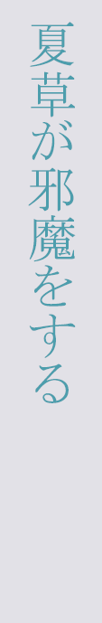
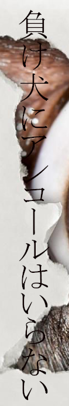
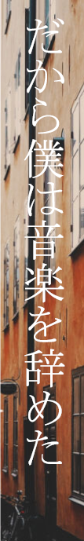
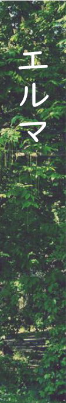
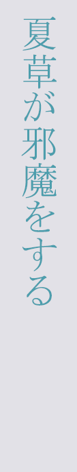
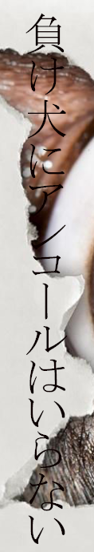
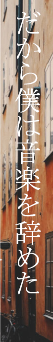
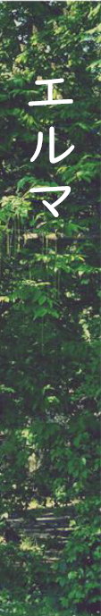


 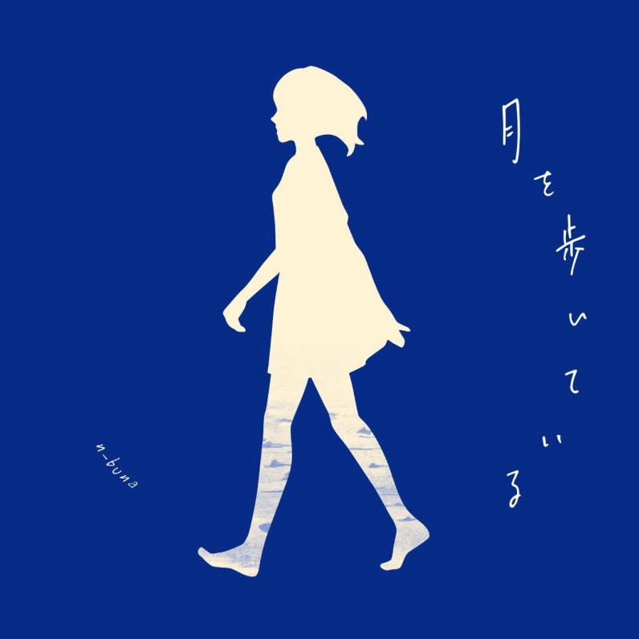
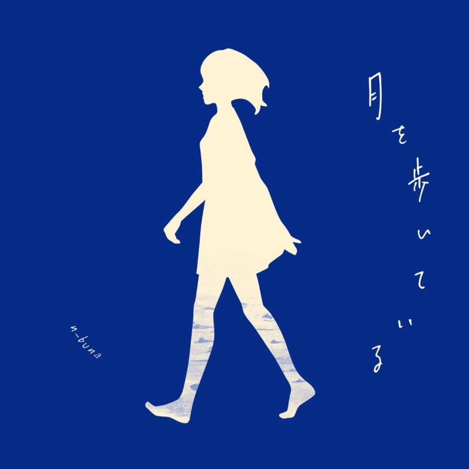
 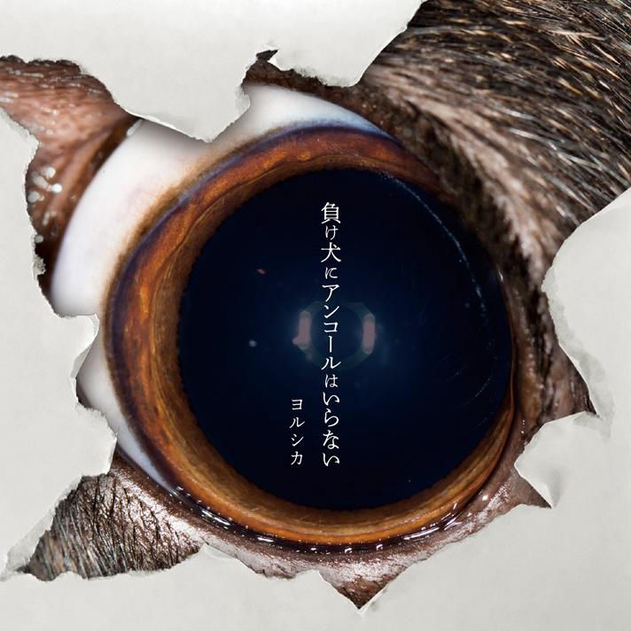
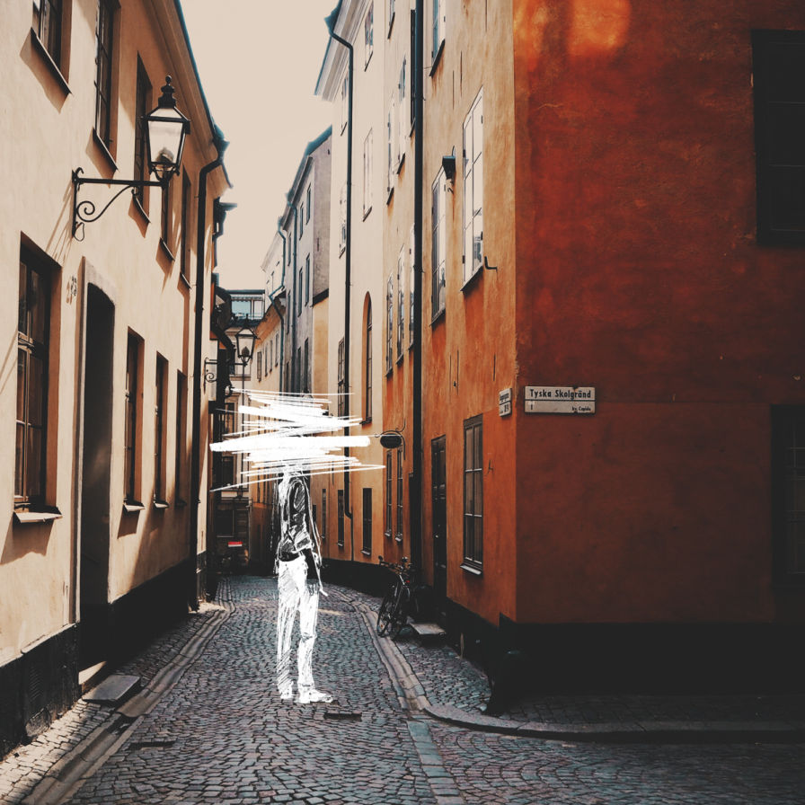
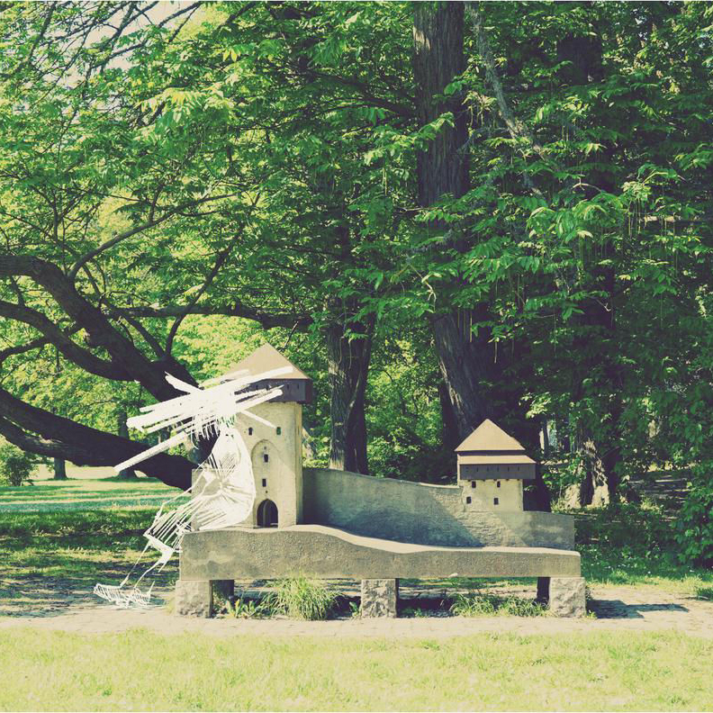
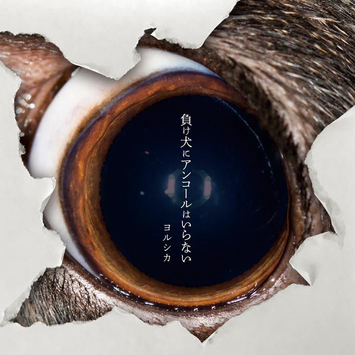
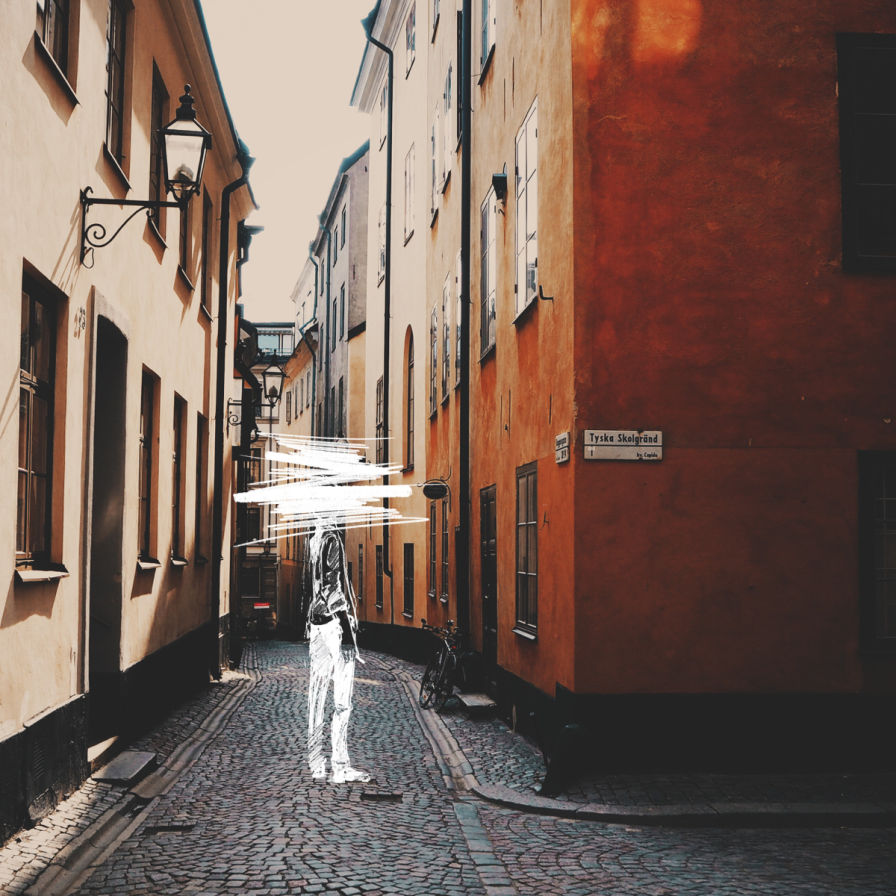
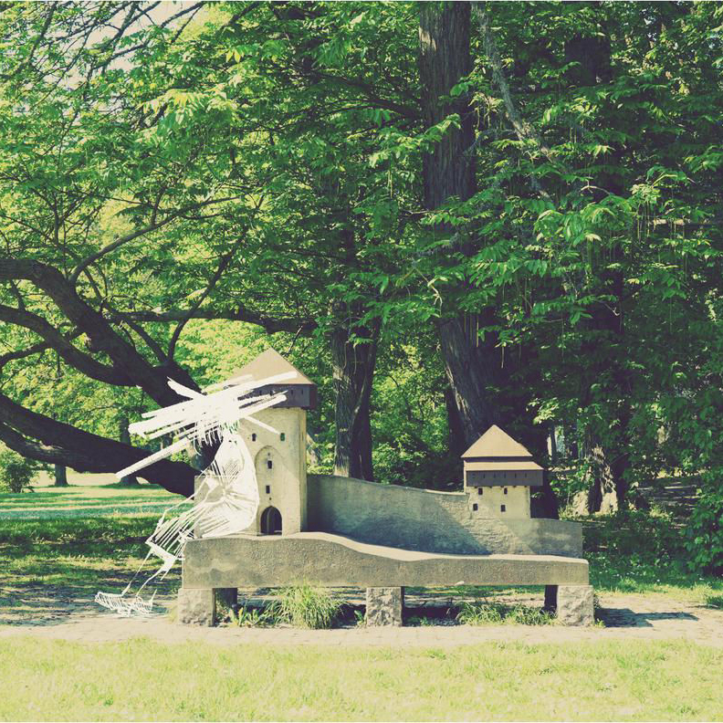


「君の声、僕の唄。 届くまで、止まるまで。
嘘吐きな、弱虫な。 僕が作った、愛の言葉。」

專輯未收录vocaloid作品
アリストラスト
サヨナラロックバレット
......
合作曲目
三月のパンタシア 花に夕景
......
「以兩個月亮面對面的主題，時針的指針正對著......
從六點開始就是晚上了。」
「我很喜歡夏天的情景。
夏天的青空也好，草原與樹蔭、河流、海洋、悶熱感也好......
全部都很喜歡。」